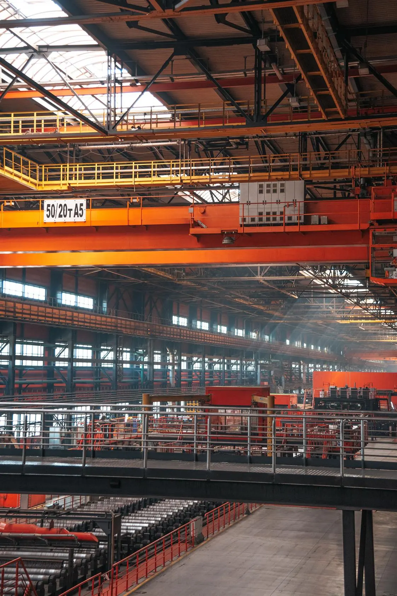

Nettoyage industriel
Nous nettoyons les installations, les bâtiments et les abords des sites de production : machines et lignes à l'arrêt, cuves et fosses, toitures et façades, sols, locaux du personnel. Selon vos besoins, une équipe est affectée en permanence à votre site, renforce vos arrêts techniques ou intervient ponctuellement.
Du sol au toit
Sur un site de production, la saleté ne se limite pas aux machines. La graisse s'accumule sur les lignes, les fosses et les caniveaux se remplissent, les poussières se déposent sur les toitures, les bardages et les vitrages. Nous traitons l'ensemble du site, des installations de production jusqu'aux vestiaires et aux parkings.
Les machines et les lignes sont toujours nettoyées à l'arrêt, selon les consignes de votre site.
Ce que nous nettoyons
Équipements de production
Machines et lignes de production : dégraissage et décrassage, toujours à l'arrêt. Conduits, gaines de ventilation et hottes d'extraction : dégraissage et dépoussiérage.
Haute pression eau chaude, vapeur, très haute pression.
Cuves et fosses
Cuves, trémies et silos : retrait des dépôts et nettoyage des parois, par des équipes habilitées au travail en espace confiné. Fosses, bacs de rétention et caniveaux : aspiration des boues et des eaux, curage.
Camion aspirateur hydrocureur, aspirateurs industriels dont modèles ATEX, très haute pression.
Bâtiments et surfaces
Toitures, gouttières et chéneaux. Façades, bardages et vitrages hors de portée depuis le sol. Sols d'ateliers, d'entrepôts et de zones de circulation, en entretien courant ou en décapage.
Nacelles, échafaudage roulant, harnais et lignes de vie, autolaveuses, monobrosses.
Locaux du personnel
Vestiaires, douches et sanitaires, y compris en continu sur les sites qui travaillent en pauses.
Extérieurs
Parkings, quais et abords : balayage et nettoyage. Remise en propreté après un chantier et débarras de zones de stockage encombrées.
Balayeuse industrielle, haute pression.
Une équipe permanente sur votre site
Une équipe TKN Technics peut être affectée à votre site et y travailler chaque jour, intégrée à votre organisation. Elle suit vos horaires et vos pauses, et connaît vos installations, vos accès et vos règles de sécurité. C'est le cas sur plusieurs sites aujourd'hui : dans une usine sidérurgique, une quinzaine de nos collaborateurs entretiennent les vestiaires 24 heures sur 24 et nettoient les installations en journée.
Pendant vos arrêts techniques
Un arrêt technique laisse peu de temps. Nous mobilisons de 10 à 20 personnes, de jour, de nuit ou le week-end, et menons les travaux en parallèle : très haute pression sur les installations, aspiration des fosses et des cuves, dégraissage des machines, interventions en hauteur et en espace confiné.
Le planning, les accès et les règles de sécurité sont validés avec vos équipes avant le démarrage.
Interventions ponctuelles
Un nettoyage de toiture, le curage d'une fosse, une remise en propreté après travaux : nous intervenons aussi une seule fois, sur devis.
Notre matériel
Nous travaillons avec notre propre matériel. Il est choisi et préparé avant chaque intervention, selon les surfaces à traiter et les contraintes du site.
- Haute et très haute pression
- Eau froide, eau chaude et vapeur, très haute pression jusqu'à 2 500 bars. Pour décrasser et dégraisser installations, structures et sols.
- Aspiration et curage
- Camion aspirateur hydrocureur, aspirateurs industriels, modèles ATEX. Pour vider et nettoyer fosses, cuves, trémies et caniveaux.
- Sols
- Autolaveuses, monobrosses, balayeuse industrielle. Pour l'entretien courant comme pour le décapage.
- Travail en hauteur
- Nacelles ciseaux, articulées et télescopiques, échafaudage roulant, harnais et lignes de vie.
Sécurité et secteurs
Avant chaque intervention, nos équipes prennent connaissance des consignes du site. Nous affectons des collaborateurs habilités selon les risques du chantier.
- Certification
- VCA*
- Habilitations
- Travail en hauteur et harnais, espaces confinés, nacelle et chariot élévateur, risques électriques (BA4 / BA5)
- Secteurs
- Sidérurgie, nucléaire, zones portuaires, agroalimentaire, béton, papier et emballage, carbochimie
Questions fréquentes
Non. Les machines et les lignes sont toujours nettoyées à l'arrêt, selon les consignes de votre site.
Pour les arrêts techniques, oui : nos équipes travaillent de jour, de nuit ou le week-end, selon le planning convenu avec vous.
Nous mobilisons de 10 à 20 personnes. Le nombre est fixé lors de la préparation, selon les travaux prévus et la durée de l'arrêt.
Oui. Nous affectons à ces travaux des collaborateurs habilités au travail en hauteur, à la conduite de nacelle et au travail en espace confiné.
Pour les chantiers importants, notre responsable commercial vient voir le site, les accès et les contraintes avant de chiffrer. Pour une intervention plus simple, décrivez le travail et joignez des photos : nous vous indiquons si une visite est nécessaire.
Un site à nettoyer ?
Décrivez le type de site, les zones à traiter et vos contraintes d'accès ou d'horaires. Pour les chantiers importants, nous organisons une visite avant de chiffrer.